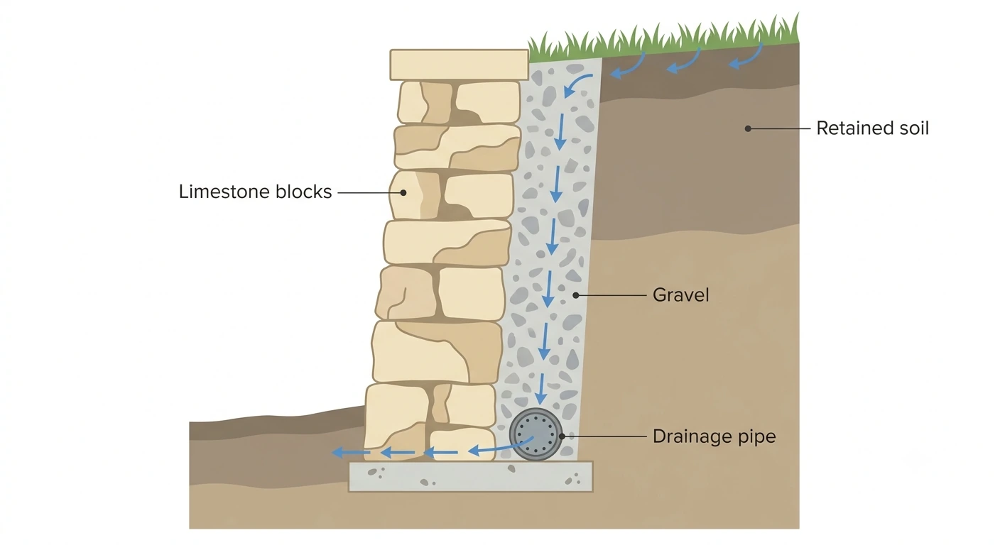

Limestone retaining walls in Perth
How they are built, what drives the cost, and whether approval applies.
- Free quotes, no obligation
- Perth metropolitan area
A limestone retaining wall is doing a structural job. It holds back soil that would otherwise move, and how well it does that comes down to things you cannot see once it is finished: the footing, the drainage and the backfill.
This page is for someone who has worked out they probably need a retaining wall and does not yet know what they are buying. It covers how one is built, what makes one quote different from another, whether approval applies, and what to ask.
What makes a wall a retaining wall
A retaining wall holds back soil that would otherwise move. If the finished ground level is higher on one side than the other, the wall is retaining, and it has to be built to resist that load.
The load is not static. Soil is heavier when it is wet, and Perth sand behaves differently saturated than it does dry. A wall designed only for the weight of dry sand is a wall designed for the easy half of the year.
If ground levels are equal on both sides, it is a boundary or garden wall instead. Different footing, different price, usually a different approval position.

Natural block or reconstituted block
Natural quarried limestone. Cut from Perth quarries. Block dimensions, colour and face vary from block to block and pallet to pallet, so each block is selected and placed to suit. That is why the wall looks the way it does and why it takes longer to build. Natural block is also lighter than reconstituted, which makes it easier to place cleanly where access is tight.
Reconstituted limestone. Manufactured block, consistent size and face. Faster to lay because there is no selection process, generally cheaper to install for the same wall, and easier to quote accurately because the labour is predictable.
Availability is worth asking about separately, because it moves. Natural block is quarried rather than manufactured, so what is available at any point depends on what the quarries are producing and how much of it comes out as usable walling block. Reconstituted is made to consistent dimensions and can be produced to meet demand, which makes it the more predictable of the two to source. Ask your contractor or a supplier what is actually available when you are planning the job, rather than relying on what any website tells you, including this one. It matters most if you want a consistent look across a long wall or need a large quantity.
Height, budget, access and appearance decide it, and it is a question worth settling on site rather than in advance.
How the wall is built
Understanding the sequence makes quotes far easier to compare, because you can see what a cheap quote has left out.
- Set out and excavation. The wall line is set out and a trench excavated for the footing. Depth depends on wall height and ground conditions.
- Footing. The footing spreads the load and stops the wall rotating forward. Footing size steps up with wall height. It is invisible when the job is finished, and it is the part most commonly reduced on a cheap quote.
- Laying. Blocks laid to line and level, usually with a slight backward lean into the retained ground on taller walls, jointed or dry laid depending on block and design.
- Drainage. Agricultural pipe run behind the base of the wall, surrounded by free draining aggregate, separated with geotextile so fines do not clog the aggregate. The ag pipe has to discharge somewhere sensible.
- Backfill and compaction. Free draining material immediately behind the wall, then backfill and compaction in layers behind that. Backfilling straight against the wall with the sand that came out of the trench defeats the drainage.
- Finish. Capping if specified, mortar tidied, spoil removed, site cleaned up.
Drainage, in more detail
Drainage is the most common cause of retaining wall failure and also the least visible part of the job. Once the wall is backfilled it cannot be inspected.

What should be there:
- Ag pipe at the base behind the wall, laid to fall
- Free draining aggregate around it, not sand
- Geotextile separating the aggregate from surrounding soil so fines do not wash in and block it
- Weep holes or a defined discharge point, so water leaves the system rather than sitting behind the wall
Water that cannot escape adds hydrostatic pressure to the back of the wall on top of the soil load it was designed for. That is how walls lean, bulge and eventually come apart.
There is a neighbour dimension as well. If a wall redirects stormwater onto an adjoining property, there is a liability exposure whether or not the wall was approved and whether or not it stands up. Worth resolving on paper before it is built.
Footings, Perth sand and mortar
The footing does the structural work. It is sized to the wall, not to a rule of thumb, and it is where the money goes on a taller wall. Perth's sandy profile drains well, which helps, but it offers different bearing behaviour to clay and it moves when it is not confined.
One quality difference a homeowner would not know to ask about is mortar colour. A wall can be pointed with default grey mortar, or with mortar tinted to match the limestone. Matched mortar reads as one material; grey mortar reads as block and lines. It is a real and visible difference, and worth raising when comparing quotes.
What drives the cost
Ranked by how much it moves the number.
- Height. Footing depth, block volume and engineering requirements all step up with height, and they compound. This is the dominant variable.
- Retaining or not. A retaining wall needs footing, drainage and possibly engineering that a garden wall does not.
- Access. Whether a machine can reach the wall line, or whether the job is barrows through a side gate.
- Drainage and discharge. Where the water goes and how far it has to be taken.
- Ground conditions. What the excavator finds.
- Spoil removal. Truck movements to take excavated material away.
- Length. It matters, but less per metre than most people assume, because setup and access costs spread across it.
Ranges and how to read a quote are on the cost guide.
Do you need council or shire approval?
Retaining walls in Perth are regulated, and the rules are not uniform. They are set by the local government, which may be a city, a town or a shire, and thresholds differ between them. There is no single Perth wide rule, and any page giving one figure for the whole metro area has not checked.
None of this is legal advice. Your council or shire's answer is the authoritative one. Confirm before committing to anything.
Why retaining walls are regulated at all
Above a certain height a failing wall can injure someone and damage structures behind and below it. Changing ground levels changes where stormwater goes. Walls near boundaries affect the neighbour's levels and drainage, which is a common source of dispute. And excavation near sewer, water, gas, power and telecommunications assets is a genuine hazard. None of the rules are arbitrary.
Building permit and planning approval are two different things
A building permit is issued under the Building Act 2011 (WA) and the Building Regulations 2012 (WA). It is concerned with whether the structure is sound and compliant, so engineering certification, footing design and structural adequacy sit here.
Planning approval, also called development approval, sits under the planning framework: the local planning scheme and, where relevant, the Residential Design Codes. It is concerned with land use, siting, setbacks, and effect on the neighbourhood. A wall can need both, either, or neither, and where planning approval is needed it normally comes first.
What generally triggers approval
Height is the usual trigger. Then proximity to a boundary, supporting a surcharge load such as a driveway or a pool, altering stormwater flow, or forming part of a larger development.
Council and shire approval reference
This table is only worth anything if every cell is real, so it is built by contacting each local government individually and dated as it goes.
| Local Government | Approval threshold | Other triggers | Council link | Last checked |
|---|---|---|---|---|
| City of Bayswater | Planning approval above 0.5m above natural ground level; a building permit is also required where the wall retains soil (cut) affecting adjoining land. | Retaining/site works over 0.5m on vacant land are generally not approved unless tied to a future development plan or a subdivision condition. | Fences and retaining walls | 2026-08-04 |
| City of Belmont | Building permit required where the wall retains ground more than 500mm and protects adjoining land. | Development approval also triggered in heritage areas, Special Development Precincts and the Swan River Trust Development Control Area; written consent from affected adjoining owners is required for boundary encroachment. | Retaining walls | 2026-08-04 |
| City of Canning | Not published, contact council. | Not published, contact council. | Building services | 2026-08-04 |
| City of Fremantle | Building permit required for walls retaining more than 500mm; every retaining wall, regardless of height, must be designed by a qualified practising structural engineer. | A separate planning development approval may also be required; confirm with the City's planning team. | Fences and retaining walls | 2026-08-04 |
| City of Melville | No planning approval needed at or below 500mm; a building permit is required where the wall retains soil over 500mm, is an addition to an existing wall, or (tiered walls) the total retained height exceeds 500mm. | A building permit may still be required for excavation or cut near adjoining properties even under 500mm. | Building a fence or retaining wall | 2026-08-04 |
| City of Nedlands | Not published, contact council. | Not published, contact council. | Do I need a permit? | 2026-08-04 |
| City of Perth | Fill or retaining up to 500mm above natural ground level within setback areas is exempt from development approval under City Planning Scheme No. 2, Schedule 7; the building permit threshold beyond this is not clearly published. | Excavation and fill limits within setback areas are set out in Schedule 7. | Schedule 7 - minor development exempt from development approval (PDF) | 2026-08-04 |
| City of South Perth | Building permit and planning approval required where the wall retains ground over 0.5m. | Walls or fill over 0.5m within 7.5m of a boundary need screening if overlooking is possible; a BA20 form is required where a wall encroaches across a boundary. | Building approvals | 2026-08-04 |
| City of Stirling | Not published, contact council. (Third-party trade sites quote a 500mm figure for Stirling, but it does not appear on the council's own published pages, so it is not stated here.) | Not published, contact council. | Building documents | 2026-08-04 |
| City of Subiaco | Retaining walls under 500mm are exempt from development approval under Local Planning Policy 7.7. | Not published, contact council for building permit specifics. | Building regulations and standards | 2026-08-04 |
| City of Vincent | Retaining walls up to 0.5m are exempt from development approval; a building permit is generally required over 500mm. | Where a retaining wall sits beneath a building's wall, it is included in that wall's overall height measurement from natural ground level. | Building approval | 2026-08-04 |
| Shire of Peppermint Grove | Building permit required for any retaining wall greater than 450mm in height. | An owner changing ground level near a boundary that affects the adjoining lot must build a suitably sized retaining wall wholly within their own lot, including footings; structural engineer certification may be required. | Retaining walls | 2026-08-04 |
| Town of Bassendean | Building permit not required if the wall is 500mm or under and does not support another building or structure (required above 500mm, or if it supports a structure). | Work remains subject to the building standards even where it is exempt from a permit. | Building or altering a retaining wall or deck (PDF) | 2026-08-04 |
| Town of Cambridge | Not published, contact council. | Not published, contact council. | Plan and build | 2026-08-04 |
| Town of Claremont | Not published, contact council for a standalone figure. | Development approval must be obtained before a building permit application for retaining walls, per the Town's process. | Building | 2026-08-04 |
| Town of Cottesloe | Not published, contact council. | Not published, contact council. | Application forms and permits | 2026-08-04 |
| Town of East Fremantle | Not published, contact council for a standalone retaining-wall figure. | Side boundary fencing including retaining is exempt from approval up to 2.3m above natural ground level; retaining walls associated with swimming pool works may require development approval. | When do I need planning approval? | 2026-08-04 |
| Town of Mosman Park | Building permit required where associated retaining exceeds 500mm. | Where retaining forms part of a fence, height is measured from the higher-ground-level side. | Dividing fences | 2026-08-04 |
| Town of Victoria Park | Building permit required where a retaining wall is within 1.0m of a boundary, or 500mm or more in height if not on the boundary. | Site plans for development approval must show contours at 0.5m intervals and the location and levels of adjoining structures. | Building information and FAQs | 2026-08-04 |
| City of Kalamunda | A retaining wall exceeding 500mm within the front setback area requires approval; confirm with Planning outside the setback area. | Anyone excavating below or filling above natural ground level must provide a suitable retaining wall or embankment maintaining natural ground level and any existing surcharge load at the boundary; a front-setback fence above a retaining wall is capped at 1.5m and 50% permeable. | Building information sheet (PDF) | 2026-08-04 |
| City of Swan | Not published, contact council. | Not published, contact council. | Useful documents and links | 2026-08-04 |
| Shire of Mundaring | Not published, contact council. (The Shire notes stricter controls where slope, bushfire or soil instability apply, but publishes no clean height figure.) | Not published, contact council. | Fences and retaining walls | 2026-08-04 |
| City of Joondalup | Building permit not required if the wall is 0.5m or under and does not protect adjoining land; planning approval thresholds vary by R-Code density (for example, R20 allows up to 1m within the street setback without approval, higher-density codes cap it at 0.5m). | Retaining or fill exceeding 0.5m within 7.5m of a side or rear boundary triggers screening requirements. | Retaining walls and site works | 2026-08-04 |
| City of Wanneroo | Building permit required where the wall exceeds 500mm, is an addition to an existing wall, or (tiered walls) the total height exceeds 500mm. | Planning approval is required regardless of height in non-residential zones; in residential zones only if it does not comply with the Residential Design Codes. | Retaining walls | 2026-08-04 |
| City of Armadale | Building permit required for retaining walls over 0.5m. | Boundary retaining walls may require a building permit regardless of height; planning approval may be required before a building permit can be issued; setbacks follow the Residential Design Codes. | What can I build? | 2026-08-04 |
| City of Gosnells | Building permit or development approval may be required for walls more than 0.5m high, or within 1.5m of the property boundary. | Certified structural engineer drawings are required for walls 500mm or over; development approval should be obtained before applying for a building permit. | Retaining walls | 2026-08-04 |
| Shire of Serpentine-Jarrahdale | Building permit required for all retaining walls greater than 500mm. | Also required under 500mm where the wall changes natural site drainage in a way that reduces its effectiveness; an owner excavating below or filling above natural ground level at a boundary must provide a suitable retaining wall or durable embankment. | Retaining walls | 2026-08-04 |
| City of Cockburn | Building permit required where the wall exceeds 500mm above natural ground level (inclusive of embedment), is associated with other building work, or protects the land regardless of height. | Owners must maintain natural ground level and any existing surcharge load at the lot boundary; a retaining wall must be provided if filling above or excavating below; structural engineer certification is required. | Fences and retaining walls | 2026-08-04 |
| City of Kwinana | Not published, contact council. (The City states "large" retaining walls require a building licence, but publishes no specific height figure.) | Small retaining walls may not need approval depending on size and impact; contact the City for a site-specific determination. | Retaining walls information sheet (PDF)/information-sheets-and-guides/2025/information-sheet-retaining-walls) | 2026-08-04 |
| City of Rockingham | Building permit required for retaining walls exceeding 500mm (0.5m). | Also required under 500mm where the wall encroaches beyond the boundary, reduces the adjoining land's bearing capacity, damages or reduces the structural adequacy of adjoining buildings, or changes natural site drainage; written consent of all adjoining landowners is required where encroachment or an adverse effect occurs. | Fences and retaining walls | 2026-08-04 |
Where a council does not publish a clear threshold, this table records "not published, contact council" rather than a guess. Council policy changes without notice, so confirm the current position with your council before relying on a row.
Shared boundaries
A retaining wall on or near a common boundary raises ownership and cost questions the Building Act does not answer. The Dividing Fences Act 1961 (WA) governs dividing fences and cost sharing between adjoining owners, and a retaining wall is not automatically a dividing fence. Who pays what share, whose land the wall sits on, and the finished levels on both sides are best settled in writing before construction, not after.
Engineering and certification
Where engineering is required, a structural engineer assesses the wall against the retained height, any surcharge loads, ground conditions, footing size, drainage and overall stability. The output is a design and a certification the council or shire will want to see with a building permit application. Two shorter walls terraced up a slope are not automatically the same as one tall wall, and not automatically separate walls either, which is a common way a job that looked exempt turns out not to be. Which height triggers certification varies by council; see the reference table above.
The $20,000 registration point
In Western Australia, building work requiring a building permit and contracted at $20,000 or more generally requires the contractor to be registered with Building and Energy. Most domestic retaining wall jobs fall under that figure and larger ones do not. It is worth confirming which side of the line a job sits on, and worth verifying a registration rather than taking it on trust.
Threshold verified 4 August 2026 against Building and Energy (Department of Energy, Mines, Industry Regulation and Safety, WA): "Do I need to be a registered building contractor?". $20,000 applies to building work generally; a separate $50,000 threshold applies only to Class 10a structures (garages, carports, sheds), which does not include retaining walls. Check any contractor's current registration on the Building and Energy licence and registration search.
What to ask when comparing quotes
- Is any part of this wall retaining, or is it level on both sides?
- What is the drainage detail, and where does the ag pipe discharge to?
- What footing is allowed for, and what is it sized to?
- Who lodges any council or shire application, and is the fee in the price or on top?
- Is engineering required, and is it included?
- For work contracted at $20,000 or more, is the contractor registered with Building and Energy?
Last reviewed: 27/07/2026. Council and shire policy changes without notice; confirm the current position before relying on anything in this section.
Limestone Retaining Walls: Frequently Asked Questions
Do I need council approval for a retaining wall in Perth?
It depends on the council or shire, the height, where the wall sits on the block and what it holds up. There is no single Perth wide rule. The approval section above explains the triggers; confirm with your own local government before committing.
What is the difference between a retaining wall and a garden wall?
Level ground on both sides is a garden or boundary wall, holding up only itself. Higher ground on one side means the wall is retaining soil, which needs a heavier footing, drainage behind the base and possibly engineering.
Is limestone cheaper than concrete sleepers?
It depends on height, access and whether the block is natural or reconstituted. Limestone's advantage in Perth is local supply and appearance rather than being automatically the cheapest option.
How long does a limestone retaining wall last?
Limestone walls in Perth commonly stand for decades. What shortens that is almost always water: drainage that was never installed properly, or backfill that traps water behind the wall. The drainage detail matters more than the block.
Tell us about your job
A local contractor will be in touch if they can help.
If a limestone contractor covers your job, they'll be in touch. If nothing's a fit, we'll tell you and point you somewhere useful. Your details are used to get your job quoted and are handled as set out in our privacy policy.